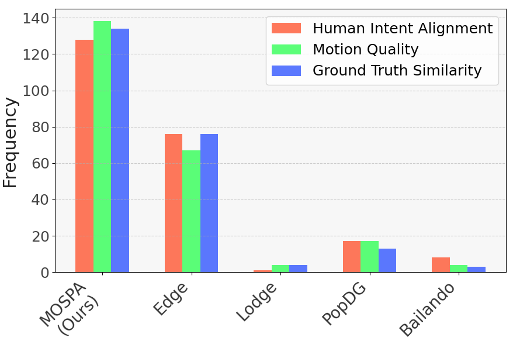

🎧MOSPA: Spatial Audio-Driven Human
Motion Generation
3The Hong Kong University of Science and Technology 4Macau University of Science and Technology
5ShanghaiTech University 6Texas A&M University


Abstract
Enabling virtual humans to dynamically and realistically respond to diverse auditory stimuli remains a key challenge in character animation, demanding the integration of perceptual modeling and motion synthesis. Despite its significance, this task remains largely unexplored. Most previous works have primarily focused on mapping modalities such as language, audio, and music to human motion generation. As of yet, these models typically overlook the impact of spatial features encoded in spatial audio signals on human motion. To bridge this gap and enable high-quality modeling of human movements in response to spatial audio, we introduce the Spatial Audio-Driven Human Motion (SAM) dataset, which contains diverse and high-quality spatial audio and motion data. For benchmarking, we develop a simple yet effective diffusion-based generative framework for human MOtion generation driven by SPatial Audio, termed MOSPA, which faithfully captures the relationship between body motion and spatial audio through an effective fusion mechanism. Once trained, MOSPA could generate diverse realistic human motions conditioned on varying spatial audio inputs. We present a comprehensive analysis of the proposed dataset and conduct extensive experiments for benchmarking, where our method achieves state-of-the-art performance on this task. Our model and dataset will be open-sourced upon acceptance. Please refer to our supplementary video for more details.

We introduce a novel human motion generation task centered on spatial audio-driven human motion synthesis. Top row: We curate a comprehensive dataset, SAM, including diverse spatial audio signals and high-quality 3D human motion pairs. Bottom row: We develop MOSPA, a simple yet effective generative model designed to produce high-quality, responsive motion driven by spatial audio. We note that the motion generation results are both realistic and responsive, effectively capturing both the spatial and semantic features of spatial audio inputs.
SAM Dataset
Statistics of the SAM dataset. The SAM dataset encompasses 27 common daily spatial audio scenarios, over 20 reaction types excluding the motion genres, and 49 reaction types. The number of subjects covered in SAM is 12, where 5 of them are female and the remaining 7 are male. It is also the first dataset to incorporate spatial audio information, annotated with Sound Source Location (SSL). The total duration of the dataset exceeds 30K seconds.
Visualization of samples from SAM with expected motions annotated. Red dots indicate the actor’s trajectory, while the blue sphere represents the sound source. The SAM dataset ensures high diversity by encompassing a broad spectrum of audio types and varying sound source locations.
Spatial audio-driven human motion data collection setup. Statistics of action duration in the dataset.
Framework
The framework of \name. We perform diffusion-based motion generation given spatial audio inputs. Specifically, Gaussian noise is added to the clean motion sample $\mathbf{x_0}$, generating a noisy motion vector $\mathbf{x_t}$, modeled as $q(\mathbf{x_t}|\mathbf{x_{t-1}})$. An encoder transformer then predicts the clean motion from the noisy motion $\mathbf{x_t}$, guided by extracted audio features $\mathbf{a}$, sound source location $\mathbf{s}$, motion genre $g$, and timestep $t$.
Benchmarking
Comparison of text-to-motion task on HumanML3D. The right arrow → means the closer to real motion, the better.
Comparison of text-to-motion task on KIT. The right arrow → means the closer to real motion, the better.

Qualitative comparison of the state-of-the-art methods in text-to-motion task. We visualize motion results and real references from six text prompts. EMDM achieves the fastest motion generation while delivering high-quality motions that closely align with the text inputs.
User Study

User study results. MOSPA outperforms other methods in intent alignment, motion quality, and similarity to ground truth. The bar chart shows the vote distribution across methods.
Spatial Audio Driven Simulated Agent Control
User study results. MOSPA outperforms other methods in intent alignment, motion quality, and similarity to ground truth. The bar chart shows the vote distribution across methods.
Check out our paper for more details.
Citation
@article{zhou2023emdm,
title={EMDM: Efficient Motion Diffusion Model for Fast, High-Quality Motion Generation},
author={Zhou, Wenyang and Dou, Zhiyang and Cao, Zeyu and Liao, Zhouyingcheng and Wang, Jingbo and Wang, Wenjia and Liu, Yuan and Komura, Taku and Wang, Wenping and Liu, Lingjie},
journal={arXiv preprint arXiv:2312.02256},
year={2023}
}